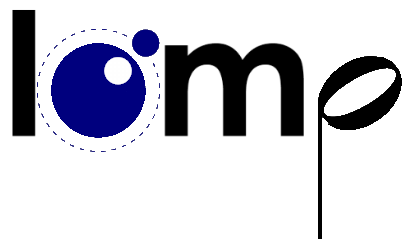

 A new iteration of lomp.
lomp (Lua Open Music Player) is a client/server media player written in lua.
This time the main loop will makes sense, and the output library takes priority.
With the same lomp aims of few external dependencies, great tag support, cross-platformness and client power. lomp2 will utilise the power of luajit's ffi; along with common libraries such as OpenAl and FFmpeg to become the ultimate music server
Dependencies
Audio Output Engines
Codecs
To generate the defs.h files you'll need a C preprocessor (eg, "cpp" that comes with gcc)
Authors
daurnimator (quae@daurnimator.com)
Contact
lomp@daurnimator.com
Download
You can download this project in either zip or tar formats.
You can also clone the project with Git by running:
$ git clone git://github.com/daurnimator/lomp2